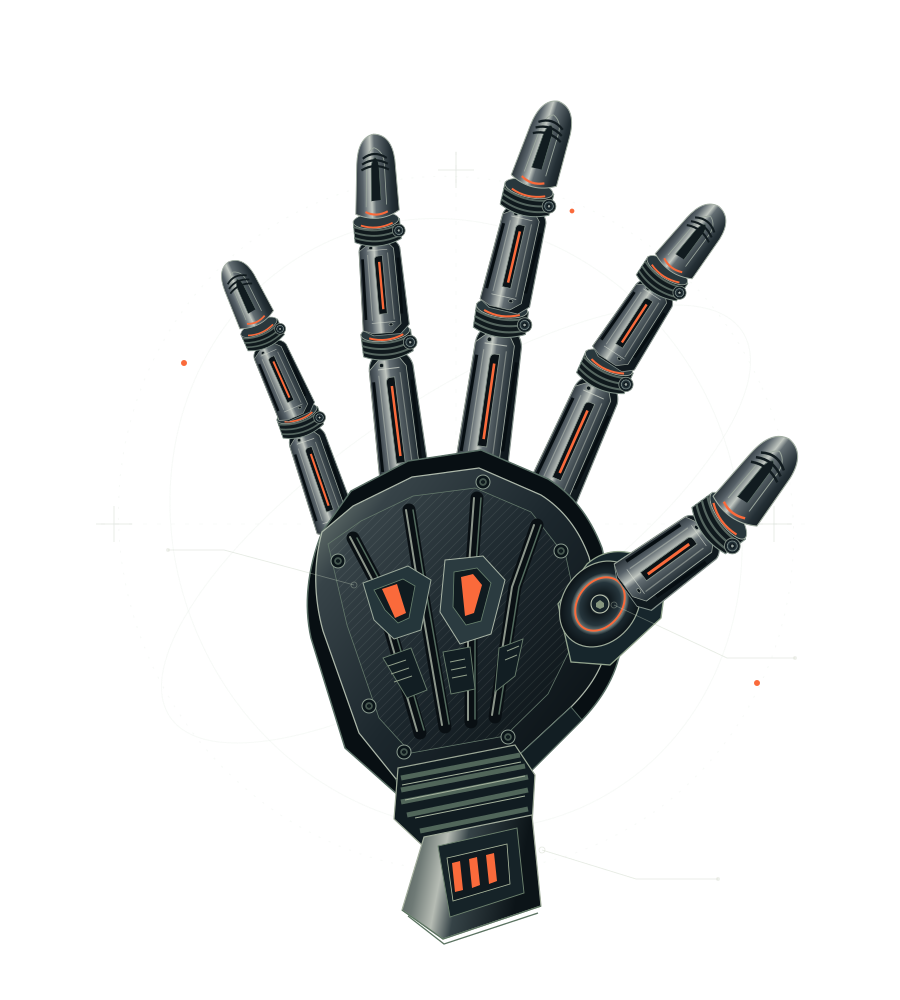

EXPERIENCIA
Desarrollo de software
Ayuntamiento El Torno · Prácticas
Desarrollo y mantenimiento de aplicaciones, nuevas funcionalidades, gestión de API y soporte a usuarios. Pruebas automatizadas y prácticas de integración y entrega continuas.
Hola, soy Daniel Castillo.
Conecto el código con el mundo real.
Desarrollo aplicaciones web, experiencias móviles
y sistemas que van un paso más allá de la pantalla.

01 / LO QUE CONSTRUYO
Problemas distintos. La misma curiosidad.
Una selección de proyectos donde pongo
mis conocimientos a trabajar.
02 / DETRÁS DEL CÓDIGO
Me interesa lo que pasa cuando una idea empieza a funcionar.
Estudio Ingeniería Informática en la Universidad de Cádiz, con mención en Tecnologías de la Información. He ampliado mi formación con asignaturas de Ingeniería del Software y Sistemas de Información para entender los proyectos desde distintas perspectivas.
Disfruto especialmente del desarrollo Android con Jetpack Compose, pero mi curiosidad también me lleva al backend, la automatización y los sistemas interactivos. Mi TFG reúne buena parte de ese interés: una aplicación para controlar una mano robótica.
Aprender, colaborar y cuidar los detalles.
Español nativo · Inglés B1 Cambridge
Tecnologías con las que me he formado y desarrollado proyectos.
Kotlin · Jetpack Compose
Flutter · React Native · Expo
Java · Spring Boot · Python · FastAPI
Node.js · Laravel · Symfony
Firebase · MongoDB Atlas · D1
Docker · Azure · AWS
Git · Jenkins · Terraform · CI/CD
OpenCV · Unity · Design Thinking
03 / EL CAMINO HASTA AQUÍ
Cada proyecto suma.
Cada experiencia también.
Desarrollo y mantenimiento de aplicaciones, nuevas funcionalidades, gestión de API y soporte a usuarios. Pruebas automatizadas y prácticas de integración y entrega continuas.
Mención en Tecnologías de la Información. Formación complementaria en Ingeniería del Software y Sistemas de Información.
Desarrollo Android con Jetpack Compose, Linux y preparación LPIC, CCNA v7: Introduction to Networks y CCNP Enterprise Advanced Routing (v9).
04 / LA SIGUIENTE IDEA
EMPIEZA CON UNA CONVERSACIÓNSi tienes un proyecto, una oportunidad
o una buena idea, me encantará escucharte.